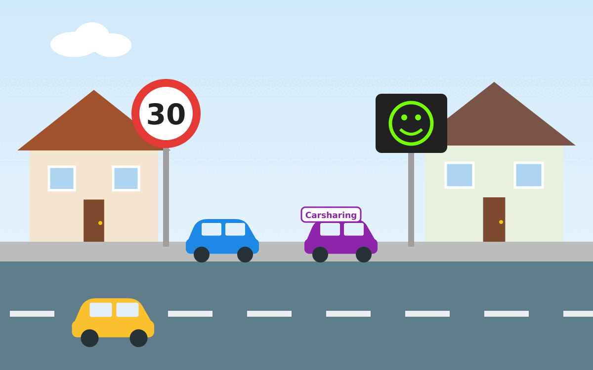

{kind=link}

Am 19.11.2025 hat der Verkehrsausschuss der Stadt Plattling getagt. Anwesend waren:
- Hans Schmalhofer (CSU, Erster Bürgermeister)
- Sandro Pfeiffer
- Max Thoma (CSU, Dritter Bürgermeister)
- Sabine Duschl (CSU)
- Stefan Fisch (FW)
- Reinhard Leuschner (FW)
- Andreas Bergmann (JL)
- Joseph Waas (JL)
- Martin Halser (SPD)
- Roland Unholzer (BP)
- Thomas Pfeffer (BP)
- Eine Vertreterin der Polizei
- Vertreter der Presse
Eventuell noch ein paar weitere Personen, die weniger gesprochen haben.
MiKar: Vorstellung Car-Sharing
Von 15:00 bis 16:27 stellte Frau Krieger das Unternehmen MiKar vor und beantwortete Fragen.
MiKar ist ein Carsharing-Anbieter. Aktuell hat das Unternehmen über 38.000 Nutzer, mehr als 200 Fahrzeuge in der Flotte und über 30 Mitarbeitende.
MiKar besteht seit 1994 und vermietet unter anderem Bürgerbusse sowie Busse für Vereine.
Es fällt eine Systembereitstellungsgebühr von 2.900 € netto an, die die Stadt Plattling zahlen müsste. Durch Unternehmenssponsoring (Werbung auf dem Fahrzeug) sollen die Kosten von 849 €/Monat netto gedrückt werden. Die dienstliche Nutzung durch Rathausmitarbeitende wäre inbegriffen.
Das Fahrzeug würde für vier Jahre zur Verfügung gestellt.
Die Stadt Plattling müsste einen zentralen, gut erreichbaren Stellplatz bereitstellen.
Das Fahrzeug kann ein Verbrenner oder ein Elektrofahrzeug sein; bei einem 9‑Sitzer wird häufig ein Diesel empfohlen, da solche Fahrzeuge oft für längere Strecken eingesetzt werden.
Die Nutzer müssten folgende Kosten tragen:
| Opel Corsa | 9-Sitzer | |
|---|---|---|
| Stundenpreis | 5,50€ | 7,90€ |
| km-Preis | 0,15€/km | 0,15€/km |
Es gibt keine Registrierungsgebühr.
MiKar würde sich um die Wartung, Reinigung und Versicherung des Fahrzeugs kümmern sowie die App zur Verwaltung der Buchungen bereitstellen.
Antrag auf die Prüfung verkehrsberuhigter Maßnahmen im Kapellenweg
Von 16:27 bis 17:00 wurden zwei Themen diskutiert:
- Tempo-30-Zone im Kapellenweg
- Geschwindigkeitsbegrenzung auf 30 km/h
Die Bewohner des Kapellenwegs haben 53 Unterschriften gesammelt, um eine Geschwindigkeitsbegrenzung zu erwirken — unabhängig davon, ob es sich um eine Tempo-30-Zone oder um eine generelle Begrenzung auf 30 km/h handeln soll.
Die Stadt hat folgende Fakten zusammengestellt:
- Für den Zeitraum 2023–2025 wurden keine geschwindigkeitsbedingten Unfälle im Kapellenweg registriert.
- Aufgrund parkender Autos ist es im Kapellenweg kaum möglich, schneller als 50 km/h zu fahren.
- Bei acht Messungen lag der Anteil der Regelverstöße bei 0,67 %.
Eine Tempo-30-Zone würde automatisch bedeuten, dass an den Kreuzungen "rechts vor links" gelten würde. Deshalb sprachen sich die meisten Anwesenden im Ausschuss klar gegen eine Tempo-30-Zone aus.
Die Vertreterin der Polizei brachte ein Dammbruch-Argument vor: Würde man hier eine Geschwindigkeitsbegrenzung einführen, würden weitere Straßen in Plattling ebenfalls eine Begrenzung fordern; am Ende müsste man dann sogar die B8 diskutieren.
Joseph Waas (JL) regte an, dass eine generelle Geschwindigkeitsbegrenzung in den Siedlungsgebieten Plattlings sinnvoll sein könnte, wenn dies von den Anwohnern gewünscht wird.
Herr Andreas Bergmann, offenbar Busfahrer, zeigte sich dagegen, da er befürchtet, dadurch nicht mehr vorankommen zu können. Auch die Vertreterin der Polizei konnte dieser Idee nichts abgewinnen, da die Unfallzahlen ihrer Ansicht nach die Maßnahme nicht rechtfertigen.
Herr Leuschner schlug eine Geschwindigkeitsbegrenzung auf 30 km/h ohne Tempo-30-Zone vor. Bürgermeister Schmalhofer erklärte, das sei nur möglich, wenn es signifikante Unfallzahlen gibt. Herr Leuschner widersprach dem und merkte an, dass auch eine erhebliche Lärmbelästigung eine Geschwindigkeitsbegrenzung rechtfertigen könnte.
Der Ausschuss hörte einen Anwohner an, der von sehr schnellen Autos und Motorrädern gegen 5 Uhr morgens berichtete.
Der Verkehrsausschuss beschloss, dass es im Kapellenweg keine Tempo-30-Zone geben wird. Stattdessen soll eine Geschwindigkeitstafel mit Smiley aufgestellt werden.
Antrag auf bauliche Maßnahmen zur Verkehrsberuhigung am Leitenweg
Ab 17:16 Uhr wurde der Leitenweg behandelt.
Ergebnisse der städtischen Feststellungen:
- Für 2025 wurden keine geschwindigkeitsbedingten Unfälle im Leitenweg gemeldet.
- Bei Messungen wichen 7,3 % der Verkehrsteilnehmer von der Regel ab. Die höchste gemessene Geschwindigkeit lag bei 51 km/h.
Meinungen und Empfehlungen:
- Bremsschwellen werden vom Ausschuss mehrheitlich abgelehnt, da sie zu zusätzlichem Lärm führen können; sie sollten nur an dokumentierten Unfallschwerpunkten eingesetzt werden.
- Ein Geschwindigkeitsdisplay wurde befürwortet.
Parkleitsystem Innenstadt Plattling
Hier ging es um Verkehrsschilder, welche insbesondere auf "versteckte" Parkplätze hinweisen sollen.
Vorgeschlagen wurde ein Farbsystem, damit man schnell merkt, bei welchem der Parkplätze man ist.
Es ging insbesondere nicht um digitale Tafeln, sondern um statische Schilder.
Anfragen, Sonstiges
Ab 17:40 Uhr:
- Für die Dr.-Zacher-Straße wird ein Verkehrsgutachten erstellt; eventuell wird die Straße verbreitert. Unklar ist mir noch, wie dann mit dem Fahrradweg verfahren wird.
- Die defekte Bedarfsampel in der Bahnhofsstraße wurde repariert.
- Es gab Diskussionen zum Verkehrsschild „50 km/h“ an der Ausfahrt des Kreisverkehrs beim Globus.
Um 17:43 Uhr endete der öffentliche Teil.